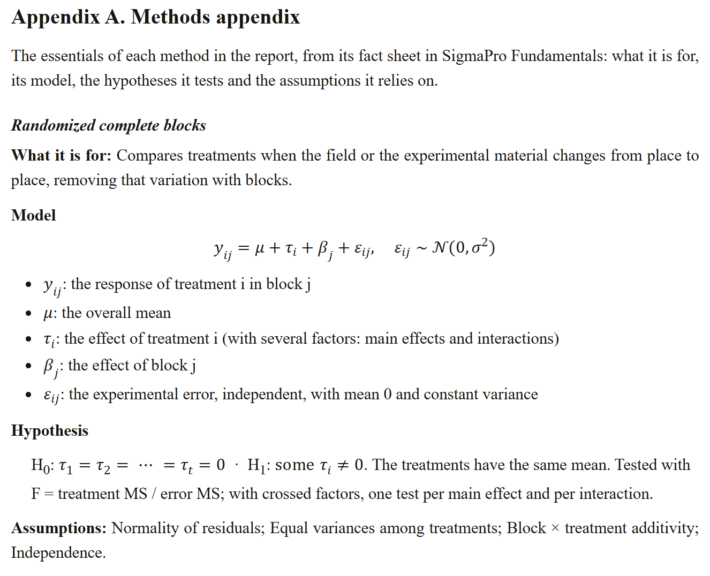
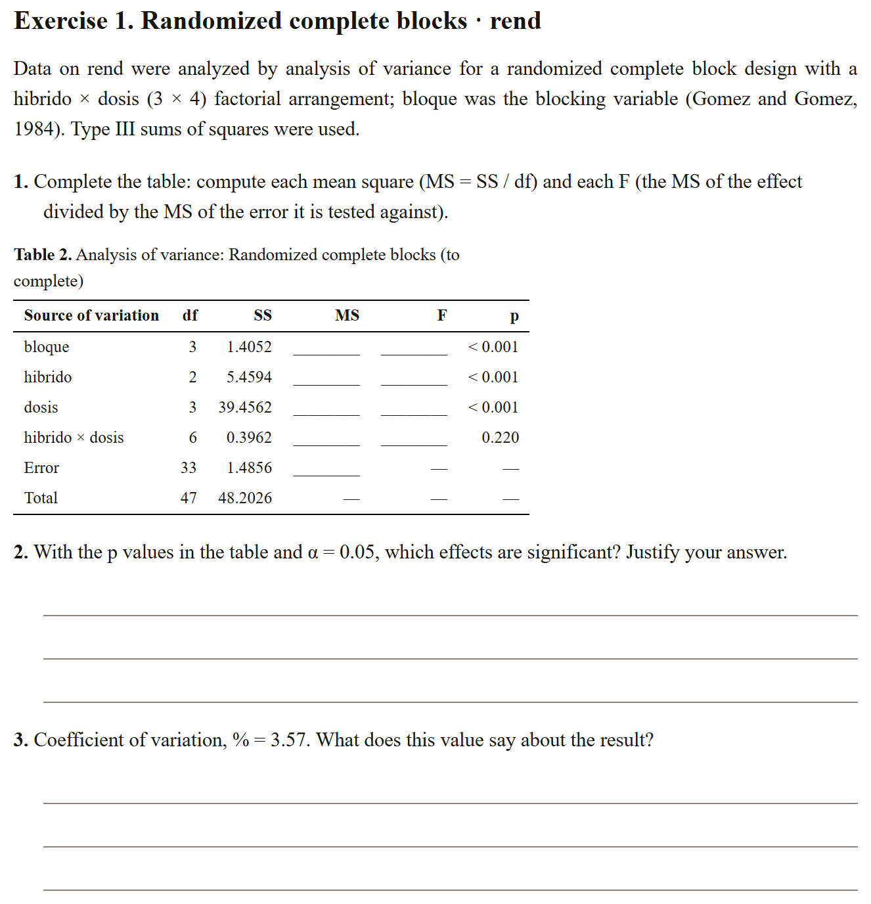
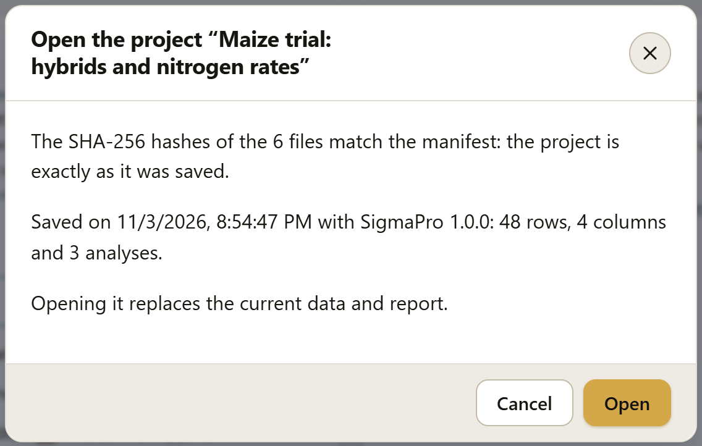

Exporting and saving your work
The report leaves SigmaPro as a document to edit or print, also in Markdown and as a class worksheet; its tables as a spreadsheet or LaTeX; and its figures in a single compressed file. The .labg project stores all your work so you can reopen it, share it or repeat it in R, and autosave protects it while you work. Everything is built in the browser: nothing leaves your computer.
- 7.1The Export block
- 7.2The full report
- 7.3The class worksheet
- 7.4The tables
- 7.5The figures
- 7.6The .labg project
- 7.7Autosave
7.1The Export block
A notice says how many analyses the report has; below it there are six cards. Each button builds its file in the browser and downloads it; if analyses in the R engine are still computing, it waits for them.
![The Export block with the maize report: the notice Analyses in the report: 3 and six cards: Full report, with the page size, the Summary in a nutshell, Reading of the indicators with gauges, Methods appendix, R code in an appendix and Technical details in an appendix checkboxes and the .docx document, PDF (print), HTML page and Markdown (.zip) buttons; Class worksheet, with the Include the data and Answer key at the end checkboxes and the Worksheet .docx and Worksheet PDF (print) buttons; Tables, with .xlsx spreadsheet and LaTeX .tex; Figures, with the Also as TIFF checkbox and All figures (.zip); .labg project, with Save project and Open a project; and Autosave, with its checkbox, the time of the last save and Delete saved work](../img/en/b7-bloque.png)
7.2The full report
The report comes out in four formats with the same content: .docx document, to edit it in a word processor; PDF (print), which opens the browser’s print dialog with the report paginated (there you choose “Save as PDF”); HTML page, a single file that opens in any browser, with vector figures; and Markdown (.zip), formatted text (see below).
You choose the Page size (letter or A4) and which parts it includes: the Summary in a nutshell, the Reading of the indicators with gauges and, in appendices, the Methods appendix, the R code and the Technical details of each analysis. The five checkboxes come checked, and the app remembers them. The document has:
- A cover with the title, the author and the date, and an information box: the data (with their number of rows), the contents (how many analyses, tables and figures) and the SigmaPro version.
- The table of contents, on a page of its own: the sections and, under Results, each analysis. In the HTML page and in the PDF each line is a link to its section; in the .docx it is a word-processor table of contents, which picks up the page numbers when its fields are updated (Word offers to do this when you open the document).
- The Summary of the results: the In a nutshell box of each analysis (section 4.5), with its number and its title, for readers who want the essentials before the detail.
- Methods: the methods paragraph of each analysis, with its citations, and the sentence that cites SigmaPro and R (section 5.4).
- Results: each analysis with its number and its title, the conclusion, the results paragraph, the reading of its indicators (figure 7.3), its tables and its figures numbered consecutively and, if it has them, its assumptions with the traffic light.
- References: the works cited by the methods, in full.
- Appendices: the methods appendix (figure 7.4), the technical details and the R code of each analysis. They take the letters A, B and C in that order; if you leave one out, the others move up.
![The beginning of the report exported as an HTML page: the cover with the title Maize trial: hybrids and nitrogen rates, SigmaPro LABG report with a gold line below it, the author and the date; the information box with the data, Example: Maize: hybrids × nitrogen (48 rows), the contents, 3 analyses, 9 tables and 3 figures, and the software, SigmaPro with every calculation validated against R; and the table of contents: Summary of the results, Methods, Results with the three analyses, References and the three appendices](../img/en/b7-documento.png)
The reading of the indicators is the document version of How to read this table (section 4.5): one gauge per key statistic of the analysis, up to eight, in the order of its tables (the p of each effect, the CV, the R², the effect sizes…), each with its value and its zone, and at the foot the sources of the guides. The values of the pairwise comparisons and that of the intercept stay in their tables. In the .docx the panel goes in as a 300 dpi image with its alternative text; in the HTML page and in the PDF, as vector graphics.
![The Reading the indicators panel of the maize block analysis in the exported page: seven rows, each with the name of the statistic, a scale with zones and a marker, and the value with its zone: the p-value of bloque, hibrido and dosis, less than 0.001, very strong; that of the interaction, 0.220, insufficient; the coefficient of variation, 3.57, low (high precision); the R², 0.969, large; and the relative efficiency, 160, precision gained; at the foot, the guides: Wasserstein and Lazar (2016), Pimentel-Gomes (2009), Cohen (1988) and Gomez and Gomez (1984)](../img/en/b7-lectura.png)
The methods appendix gives, for each method in the report, the essentials of its fact sheet in Fundamentals (chapter 9): what it is for, its model with the meaning of each term, the hypotheses it tests, its assumptions and further reading. Each method appears once, even if the report uses it in several analyses. The formulas are in MathML in the page and in the PDF, and in the .docx they are word-processor equations, which you edit with its equation editor.

Markdown (.zip) downloads a ZIP with reporte.md and the figuras folder. It is the same document as formatted text: each table as a table, with its numeric columns right-aligned and its notes; the table of contents with links to each section; the R code in code blocks; and the appendix formulas in TeX, between dollar signs. The figures and the reading panels go as 300 dpi PNG images in figuras. It is useful for taking the report to a code repository, a notebook or a document converter.
The tables in the .docx are word-processor tables, with the horizontal rules journals use, and you can edit them; the figures go in as 300 dpi images at the width chosen in Figures, with the current chart theme (table 6.1). The test battery opens each .docx with an independent reader and checks that its parts are valid and that the text of each table is exactly the app’s, and it reads the Markdown with an independent CommonMark parser to check the same in its tables (chapter 8).
The document comes out in the language of the interface: with the selector set to ES (section I.5), the cover, the headings, the conclusions, the tables and the paragraphs come out in Spanish, with the same numbers; the comments in the R code are in Spanish in either language.
7.3The class worksheet
For teaching with the analyses in the report: Worksheet .docx and Worksheet PDF (print) build an exercise sheet with the same data and, at the end, the answer key for the instructor.
The worksheet begins with lines for the name, the group and the date, some instructions and, with Include the data, the data table (up to 60 rows, with the Data filter if there is one). Each analysis in the report is an exercise with its statement, the report’s methods paragraph (section 5.4), and numbered questions with lines to answer them (figure 7.5):
- Complete the table: in an analysis of variance, the mean squares and the F values are left blank; the sums of squares, the degrees of freedom and the p values are shown. In analyses without that table, the main table is given in full, to answer from it.
- Decide, with the p values and the analysis’s α, which effects are significant.
- Interpret up to two indicators of the result, the single-valued ones: the CV, the R², an effect size.
- State which assumptions the method relies on, according to its fact sheet in Fundamentals (chapter 9).
- Write the conclusion in two or three sentences, without statistical symbols.

With Answer key at the end, a separate page has the complete table, with the same number, and the answer to each question with the numbers of the case: the conclusion of the analysis, the interpretation of each indicator with its guide, the assumptions from the fact sheet and the In a nutshell box. To hand out the worksheet without the key, uncheck that box; you can edit the .docx to change or add questions.
7.4The tables
- .xlsx spreadsheet: each table of the report on its own sheet, with all its digits, without the on-screen rounding, and a first sheet with the index. It is useful for further calculations, or for rebuilding a table in another format without retyping a single number. To download a single table as CSV, without building the spreadsheet, use the Download as CSV button of the result in Analysis or Explore (section 4.5).
- LaTeX .tex: the tables as LaTeX tables with the three journal rules of the
booktabspackage, one pertableenvironment, with its title and its notes, ready to paste into a thesis or paper written in LaTeX.
7.5The figures
All figures (.zip) downloads a compressed file with each figure of the report in SVG, vector PDF and PNG at 600 dpi, at the width chosen in the Figures block and with the changes made with the ✎ editor, plus an index with the number and the caption of each one. With Also as 600 dpi TIFF, it adds the TIFF. The figures come out with the current chart theme. A single figure is downloaded from its card in the Figures block (section 6.3).
7.6The .labg project
The project stores all your work in a single file: the data, the report and the figure settings. Use it to continue another day, to take your work to another computer, to send it to an advisor or a reviewer, or to repeat all the analyses in R.
Save project downloads a file with the .labg extension, which is a ZIP with these files:
| File | What it stores |
|---|---|
manifiesto.json | The format, the SigmaPro version and the SHA-256 hash of each file. |
datos/hoja.json | The complete worksheet: the column types, the factor levels, the computed columns and the filter. |
datos/datos.csv | The rows the analyses use, as text, for R or any other program. |
analisis.json | The report: each analysis with its inputs, its options, its title and its note. |
estilos.json | The figure settings. |
codigo/analisis.R | The R code that repeats everything: unzip the project and run source("codigo/analisis.R") from its folder. |
LEAME.txt | What the file is and how to open it. |
Results are not stored: they are recalculated when the project is opened, so they come out exactly the same (the test battery checks this, table by table) and a project never carries outdated numbers.
Opening a project
You open a project with Open a project in Export, or with Open a .labg project in Results when the report is empty. The app checks the SHA-256 hash of each file against the manifest. If they match and there is no other work in the app, it opens the project directly; if data or analyses are loaded, it asks first, because opening the project replaces them.

If any file changed after it was saved (someone edited the CSV or the report by hand), its hash does not match: the dialog says so, with the name of each changed file, and the button changes to Open anyway. A file that is not a SigmaPro project, or that comes from another app of the suite or from a newer version of SigmaPro, does not open, and a notice says why. Once the project is open, the app goes to Results with the report already recalculated.
7.7Autosave
While you work, the data (with their types, their computed columns and their filter), the analyses in the report and the figure settings are saved in the browser’s own storage, two seconds after the last change and whenever you switch tabs or close the tab. Nothing leaves your computer. Section 1.4 explains how to recover your work when you open SigmaPro again.
The Autosave card of the Export block says when the work was last saved and what was saved (“Saved at 12:28 PM: …, 48 rows and 4 columns, 3 analyses in the report”). It has two controls:
- Save the work in this browser: checked by default. Unchecking it deletes what was saved and stops saving; checking it again saves right away.
- Delete saved work: deletes it now; the work is saved again at the next change.
If the browser does not allow saving (a private window, blocked or full storage), the app keeps working the same and the card says so: in that case, save the .labg project. If SigmaPro is open in two tabs, the card warns you when the storage is in use by the other one.
The saved work stays in that browser, and the next person who opens SigmaPro will see the notice offering to recover it. On a lab computer or in a computer center, uncheck autosave or use Delete saved work when you finish, and take your work with you in the .labg project.